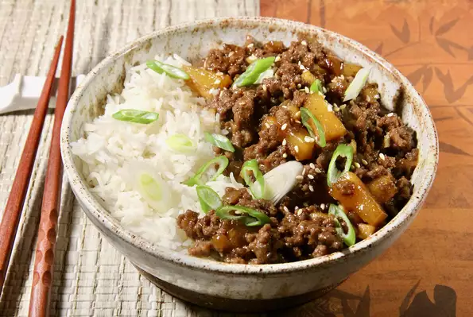

Teriyaki Ground Beef Skillet

Description
A quick and easy one-pan, kid-friendly skillet dinner with sweet, rich, and flavorful meat and an Asian twist. The perfect weeknight dinner served with white rice.
Ingredients
For 4 servings.
- 1 pound lean ground beef
- ½ cup finely chopped onion
- ¾ cup thick teriyaki sauce
- ¼ cup chopped water chestnuts, drained
- ½ (8 ounce) can pineapple tidbits, drained
- 1 teaspoon finely chopped garlic
- 1 teaspoon minced fresh ginger
- freshly ground black pepper to taste
- 1 teaspoon sesame seeds
- 1 tablespoon sliced green onion
Directions
- Brown ground beef and onions in a large skillet over medium heat, crumbling as it cooks, until the beef is no longer pink and the onion is soft, about 5 minutes. Drain if necessary.
- Add teriyaki sauce, water chestnuts, pineapple, garlic, and ginger to the skillet; stir to combine. Turn the heat down, and simmer for about 5 minutes.
- Sprinkle with sesame seeds and sliced green onion and serve.